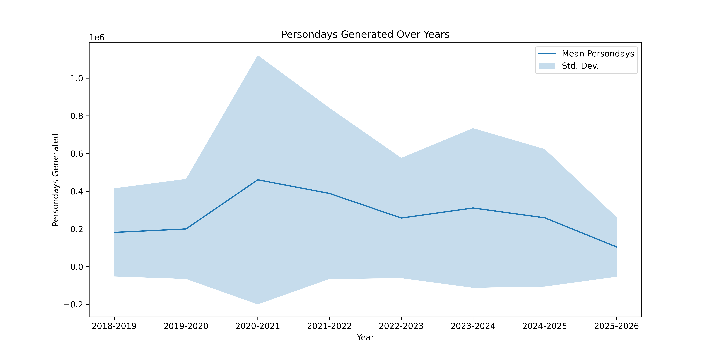
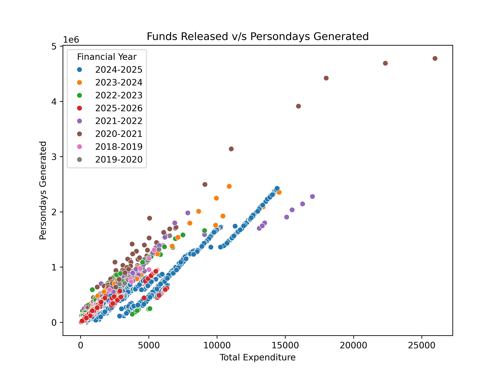
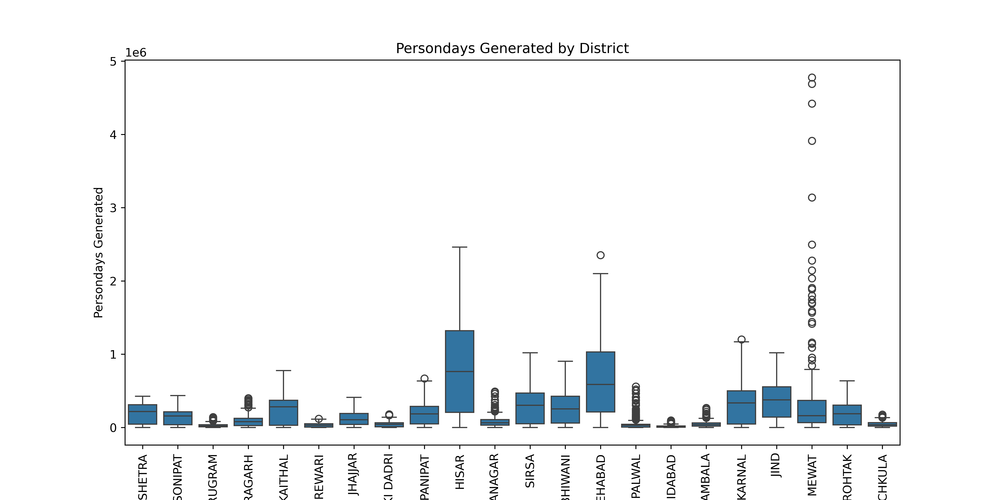
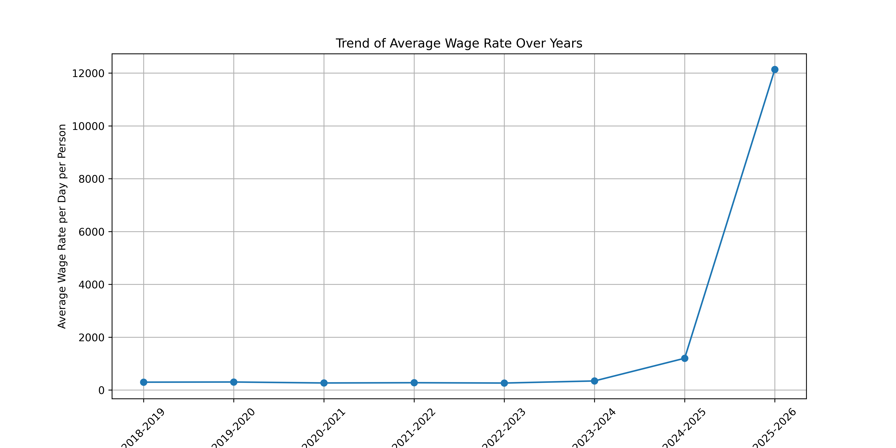
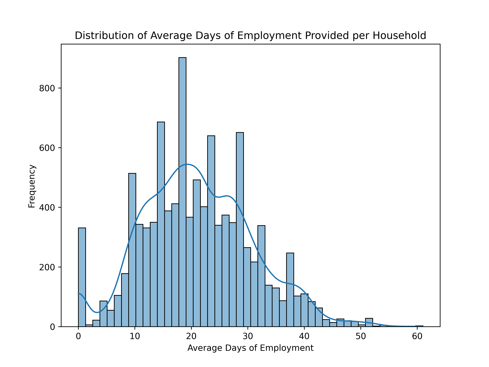

Data Analysis on MGNREGA Dataset (Haryana State)
Important: ''Persondays_of_Central_Liability_so_far'' represents the cumulative number of persondays for which the central government is liable for wage payments under the MGNREGA scheme up to a certain point in time.
Plot 1.
This line plot shows the general trend that high Persondays generated generally equivalent to high data variation. Plot 2.
This scatter plot helps to see the almost linear correlation between the funds spent and the amount of employment generated. Plot 3.
This box plot shows that Hisar district generated maximum Persondays while the Faridabad district generated the minimum. Plot 4.
This correlation matrix shows the dependence between various numerical features.
Plot 5.
This line plot shows an increase in the average wage rate over the years with a sudden surge from 2024-25 to 2025-26. Plot 6.
This histogram plot shows the average days of employement provided per household lies around 20 days. References
Mahatma Gandhi National Rural Employment Guarantee Act (MGNREGA). Open Government Data (OGD) Platform India. Published 13/09/2023, Updated 03/10/2025.
Available at: https://www.data.gov.in/resource/district-wise-mgnrega-data-glance .
Released under the National Data Sharing and Accessibility Policy (NDSAP) .